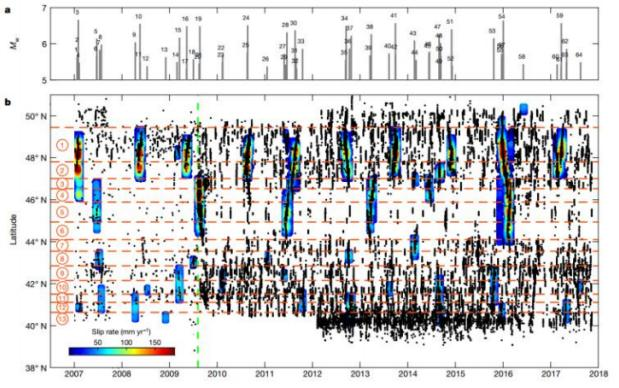
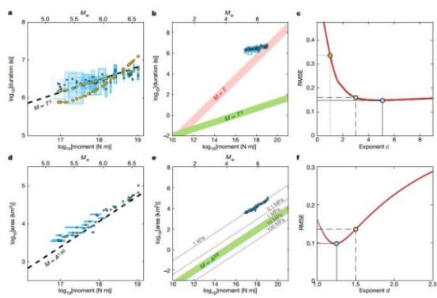
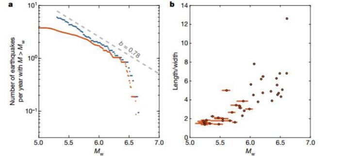

Faults can experience both sudden slip during earthquakes and slip over extended periods, known as slow-slip events. Previous observational studies in different tectonic settings indicated that the seismic moment of slow-slip events is linearly related to their duration, while the seismic moment of earthquakes is cubically related to their duration. This finding led researchers to explore the reasons behind these differences. Based on a catalog of slow-slip events along the Cascadia megathrust from 2007 to 2017, researchers found that the seismic moment and duration of slow-slip events are closer to a cubic relationship. Like conventional earthquakes, the seismic moment of slow-slip events is positively correlated with the rupture area (A^(3/2)), and their frequency and magnitude follow the Gutenberg-Richter relationship. Finally, slow-slip events exhibit pulsed ruptures similar to earthquake ruptures. The similarity in the nature of slow-slip events and conventional earthquakes suggests that they may be controlled by similar dynamic properties. The research findings were published in Nature in October 2019.
Utilizing geodetic measurements to detect strain accumulation and release along many subduction zones has shown that episodic slow-slip events occur along major thrust faults. These slow-slip events are often accompanied by tremors. Studies of many subduction zones suggest that the seismic moment (M0) and duration (T) of slow-slip events follow M0∝T, while earthquakes follow M0∝T^3, indicating different slip behaviors. The cubic relationship is believed to arise from circular ruptures with a constant stress drop forming at a constant rate, a model that aligns well with earthquake ruptures. For larger, well-confined ruptures spanning the entire width along dip of a subduction zone, the relationship between seismic moment and duration transitions to M0∝T. This transition is challenging to observe in earthquake catalogs. In contrast, only large slow-slip events can be detected using geodetic techniques, and they often exhibit elongated instead of circular slip areas, suggesting a bounded rupture. This idea implies that the difference between conventional earthquakes and slow-slip events is due to earthquake catalogs primarily consisting of unbounded ruptures, while slow-slip events are bounded ruptures. Another perspective suggests that this difference reflects different dynamic processes. In this study, researchers used the catalog of slow-slip events in Cascadia. After extracting long-term trend averages from time series using slow-slip events (SSE) and deriving coupling patterns representing the degree of plate interface locking, correcting for fluid effects, and data on co-seismic and post-seismic deformation, researchers adjusted the corrected time series to reflect the spatiotemporal variations in slip patterns along the major thrust faults. Across the entire Cascadia megathrust, 64 slow-slip events were extracted based on slip patterns, similar to previous studies, all accompanied by tremors. Individual events exhibited unidirectional or bidirectional ruptures, with rupture speeds ranging from 5.5 to 11 km/day. Larger slow-slip events showed pulsed ruptures similar to earthquakes but with very low extension and slip rates. Figure 1 shows the distribution of slow-slip events, similar to previous studies, distributed at positions where the forearc mantle intersects the megathrust and separated by shallower locked domains.
In this study, the seismic moment and duration of slow-slip events are closer to a cubic relationship similar to M0∝T^3, but this dataset has biases because a low-pass time filter with a cutoff time of approximately 30 days was applied to the time series. To improve the analysis and mitigate the possibility of bias introduced by manually selecting the start and end points of SSE and using a shorter cutoff time (approximately 9 days), time series were manually measured. For caution, 17 suspicious events were removed, and 7 event pairs were merged due to the close proximity in time and space. The final revised catalog includes 40 events. For each event, the minimum and maximum durations were estimated, and trends consistent with the original catalog were found. Next, considering the uncertainty of duration and amplitude, as well as the impact of the filter, the modified dataset was used to search for the most suitable scaling relationship. The cubic relationship with an exponent (c) of 3 had an root mean square error (RMSE) approximately half of that obtained for c=1, with little change for c≥3. According to the sliding model, estimates of duration values from SSE tremor bursts and the associated moment release were used. In this case, no filter correction was needed. The results confirmed that M0∝T^3 is more likely than a linear proportion, with a reduction of approximately 68% in RMSE. The researchers concluded that SSE occurs within a narrow range of conditions, similar to the deep SSE analyzed here in Cascadia, following an approximately cubic duration relationship, similar to the scaling relationship of conventional earthquakes. As most SSE in the catalog cause slip across the entire width of the megathrust, the aspect ratio is relatively large, a surprising finding. They would follow a linear scaling relationship, but it's worth noting that, although the cubic scaling relationship of conventional earthquakes is generally believed to reflect self-similarity and is reasonable based on circular fault models, the same relationship is observed in this dataset, where most ruptures are elongated with high aspect ratios ranging from 2 to 12.
There is a strict proportional relationship between seismic moment and rupture area, roughly following the conventional earthquake scaling relationship M0∝A^(3/2). However, based on the same circular rupture model typically used to quantify earthquake ruptures, the value of M0∝A^(3/2) is three orders of magnitude smaller, indicating a stress drop of about 4.3±2.0 kPa, compared to the conventional earthquake range of 1–10 MPa. However, due to the considerable length of the rupture area, this estimate of average stress drop is questionable. Therefore, the researchers used a method proposed by Noda et al. (2013) to estimate the average stress drop for each SSE and applied a triangular fault analysis solution by Meade (2007). The stress drop values ranged from 0.9 to 18.0 kPa, with an average of about 5.8 kPa and a standard deviation of 2.0 kPa. Based on 16 events with magnitudes in the range of 6.2–6.7 between 1998 and 2008 and a sliding model, the average stress drop was about 10 times lower than the value proposed by Schmidt and Gao (2010). Given the similar sliding distribution, researchers suspect that this difference is due to the way Schmidt and Gao measured rupture area. In fact, the sliding model did not consider the sliding needed to balance the seismic load during SSE and the spatial smoothing of the sliding model, as the inversion regularization is stronger. Researchers also examined the relationship between the frequency-magnitude of SSE. The revised catalog's data selection resulted in lower amplitude flips, but in any case, SSE approximations showed a linear correlation between Mw and b values (average distribution of earthquake size). The frequency of events larger than Mw=6.4 suddenly drops, indicating a truncation effect. Truncation cannot be explained by the transition from unbounded to bounded rupture because this transition would occur at much smaller magnitudes, approximately Mw≈5.7, for a given rupture aspect ratio. Given the caution needed due to only 11 events with Mw>6.4, this observation should be considered carefully. Previous studies also suggested that SSE follows Gutenberg-Richter's law but used seismic moments inferred from duration and assumed a linear relationship between seismic moment and duration. Although the assumed scaling relationship may be incorrect, the conclusion seems to hold. The cumulative sliding distribution and the number of subfault slips define 13 segments, with segments 1 and 2 being strongly coupled. Except for July 2014, when rupture was limited to segment 2, they mostly ruptured together. Segment 7 in 2014 ruptured with segments 6 and 8 but never ruptured individually. The segmented nature of the Cascadia SSE zone has attracted attention, and similar segmentation has been observed in Japan. In essence, this segmentation is similar to the segmentation defined by conventional thrust fault earthquakes. In summary, the proportional relationship proposed by Ide et al. (2007) as M0∝T may be due to SSE occurring under different conditions. For the specific case of Cascadia SSE, any subset of SSE under similar conditions would exhibit a cubic scaling relationship. Therefore, on the Cascadia subduction zone, SSE in terms of segment ruptures, frequency-magnitude distribution, and scaling relationships are very similar to conventional earthquakes. The pulsed propagation of individual events also looks very similar to earthquake ruptures under background conditions in the Mexico subduction zone. The researchers concluded that the dynamics controlling SSE are not significantly different from those controlling earthquake ruptures, which is a surprising result, as earthquake ruptures are typically thought to be controlled by inertial effects necessary for explaining the radiation of seismic waves. Unexpectedly, the researchers' results call for a reexamination of the reasons for the M0∝A^(3/2) relationship, as it seems at least in SSE, explanations based on self-similarity and circular rupture models do not hold. It may be necessary to reexamine the influence of geometric boundaries on the scaling relationships of conventional earthquakes and SSE. The similar scaling relationships between SSE and conventional earthquakes suggest that SSE could be useful in developing and testing seismic sequence dynamic models that are challenging to constrain from observations of conventional earthquakes, especially considering the long return periods of large earthquakes.